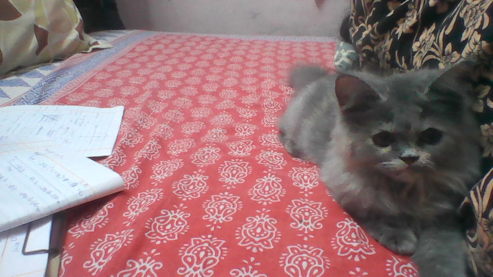

Kamilah parveen

summary
I am a hardworking and dedicated individual with experience in customer service and administration
education
-
Bachelor of Arts, Business Administration - University of XYZ (2010-2014)
work experience
-
Customer Service Representative - ABC Inc.
June 2014 - May 2018
-
Answered customer inquiries via phone and email
-
Resolved customer complaints and issues
-
Maintained customer records and updated account information
-
Administrative Assistant - XYZ Corp.
June 2018 - Present
-
Assisted with scheduling appointments and meetings
-
Managed incoming and outgoing mail and correspondence
-
Prepared reports and presentations using Microsoft Office Suite
skills
-
Customer service:★★★★★
-
Microsoft Office Suite:★★★
-
Organizational skills: ★★★★
Awards and Certifications
-
Employee of the Month - ABC Inc. (August 2016)
other